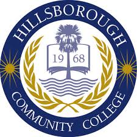

Alexander Infante Jr. | AJINFANTE@YMAIL.COM | (813) 403-3437
 Summary:
Summary:
I am a graduate of Hillsborough Community College (HCC) with an A.S. in computer Programming with the intention
to continue my education at University Of South Florida (USF) I am actively seeking employment in the computer science
field. Together with the base knowledge of programming languages like C, C++, C#, Java, HTML, XML, and copmuter
logic.
Education:
Hillsborough Community college (2012 – 2016)
• Associate of Science (A.S.), Computer Programming, 3.51
• C++, C#, C, Visual Basic, Programming Logic, Java,.NET, Unix/Linux, Database Design, Intro to Computers & Tech, GitHub
Thomas Jefferson High School (2008 - 2012)
• Diploma with Business Emphasis, 3.49
• Actively participated in FBLA, and SGA
• Graduated from the business program with honors
Honors and Awards:
College Credit Certificate (CCC) (August 2015)
Hillsborough Community College (HCC)
I have received a certificate as a Computer Programming Specialist while pursuing my A.S. degree at HCC.
Deans List (May 2015)
Hillsborough Community College (HCC)
• Made Dean's List thanks to my consistent strong academic record. Maintained GPA above 3.5 throughout entire academic career with at least
twelve credit hours in two semesters.
Experience:
Tech Support Specialist
Nationwide Title Clearing,Inc.
December 2015 – Present (6 months) | Palm Harbor, Fl
• Coordinate between the employees on the production floors, our clients that use the portals NTC has created and the developers
• Being the first tier of support I gather all needed information and handle what can be done between my fellow tech support members and myself
• As new features and applications are developed I am to properly and thoroughly conduct UAT on the systems
• Computers are moves and minor repairs such as changing power supply, graphics cards, etc.
Data Entry Specialist
Nationwide Title Clearing,Inc.
August 2015 – December 2015 (5 months) | Palm Harbor, Fl
• It is expected that I enter the information from mortgages, deeds of trusts, and other legal recorded documents as fast and accurate as possible.
• Reviewing data for errors prior to entering
• Entry of data and documents into the computer
Lot Porter
Mercedes Benz of Tampa Bay
September 2014 - January 2016 | (1 Yr 5 Months)
• Organize, straighten and re-park inventory in a timely fashion
• Write work orders, track problems and ensure units are in proper working order
• Maintain a safe and clean work area for customers and coworkers
• Work with other team members to problem solve in order to efficiently address a guest’s needs
Volunteer:
Dog companion
Humane Society of Tampa Bay
September 2011 – February 2013 (1 year 6 months) | Animal Welfare
• Helping people through the adoption paperwork and clarify any discrepancies in application.
• Help animals become more adoptable and help to reduce shelter stress by providing exercise, relaxation and playtime for animals in our care